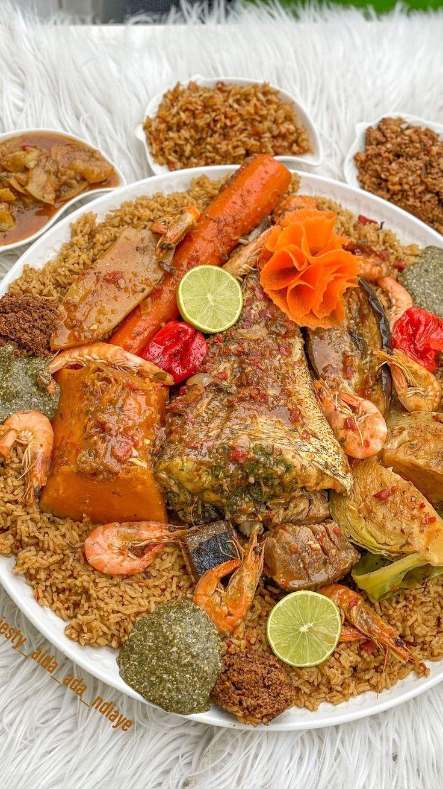

Découvrez notre menu africain riche et varié : des plats sénégalais emblématiques aux créations contemporaines inspirées du continent. Chaque plat est préparé avec des produits frais et des épices authentiques pour vous garantir un voyage gustatif incomparable

Le plat national du Sénégal, composé de riz, de poisson et de légumes mijotés dans une sauce tomate épicée.

Un plat savoureux à base de poulet mariné dans du jus de citron, des oignons et des épices, puis grillé à la perfection .

Un ragoût riche et crémeux à base de viande (généralement du bœuf ou du poulet) cuit dans une sauce aux arachides, servi avec du riz.
Situé au coeur de Thies, Saveur du senegal est né d'une passion pour la gastronomie sénégalaise. Notre equipe met à l'honneur les recettes traditionnelles et les revisite dans un esprit moderne
"Un véritable voyage culinaire ! Les plats sont délicieux et l'accueil est exceptionnel."
- Awa, Mbour 1
"Le meilleur Thieboudienne que j'ai goûté de ma vie. Bravo à toute l'équipe !"
- Mamadou, NGuenth
"Une expérience inoubliable, les saveurs me rappellent mon enfance. Je recommande vivement."
- Fatou, hersent